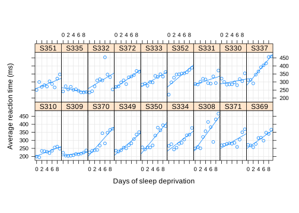
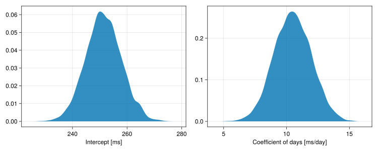
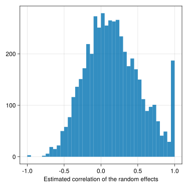

usingCairoMakie # graphics backendusingDataFrameMacrosusingDataFramesusingLinearAlgebrausingMixedModelsusingMixedModelsMakie # special graphics for mixed modelsusingProgressMeter # report iteration speed when fitting modelsusingRandomusingRCallCairoMakie.activate!(; type="svg") # Scalable Vector Graphics backendProgressMeter.ijulia_behavior(:clear); # Adjust progress meter for Jupyter output
Linear Mixed Models in Julia
A mixed-effects model or, more simply, a mixed model incorporates both fixed-effects parameters and random effects.
The random effects are associated with the levels of one or more grouping factors, which typically are experimental units or observational units, such as subject or item.
From an experimental design point of view these are blocking variables: known sources of variability for which we wish to account but whose levels are not themselves of interest.
This is in contrast to experimental or observational factors with a known, fixed set of levels that we are seeking to compare.
MixedModels.jl provides structures and methods for fitting and analyzing mixed-effects models.
Fitting Linear Mixed Models (LMMs) or Generalized Linear Mixed Models (GLMMs) is described in these notes and in this in-progress book.
The sleepstudy data
The sleepstudy dataset
sleepstudy = MixedModels.dataset(:sleepstudy)
Arrow.Table with 180 rows, 3 columns, and schema:
:subj String
:days Int8
:reaction Float64
is from a study on the effect of sleep deprivation on reaction time. A sample from the population of interest (long-distance truck drivers) had their average response time measured when they were on their regular sleep schedule and after one up to nine days of sleep deprivation (allowed only 3 hours per day in which to sleep).
This data description is inaccurate
The description of these data is inaccurate. See this description for more detail.
Unfortunately by the time we learned this the researchers were no longer able to locate the original data. We keep using this example because it is such a nice example, even if the description is not quite accurate.
Plot the data in a multi-panel plot, Figure 1, using the R package {lattice} via RCall.jl.
Code
RCall.ijulia_setdevice(MIME("image/svg+xml"), width =7, height =5);R"""print( lattice::xyplot( reaction ~ days | subj,$(DataFrame(sleepstudy)), type = c("g","p","r"), layout = c(9,2), index = function(x,y) coef(lm(y ~ x))[1], xlab = "Days of sleep deprivation", ylab = "Average reaction time (ms)", aspect = "xy" ))""";

Figure 1: Average reaction time [ms.] versus days of sleep deprivation by participant. The panels are ordered according to increasing initial reaction time starting at the lower left.
Comments on the plot
Each panel shows the data from one subject as well as a simple linear regression line fit to that subject’s data only.
The panels are ordered by increasing intercept of the within-subject line row-wise, starting at the bottom left.
Some subjects, e.g. 310 and 309, have fast reaction times and are almost unaffected by the sleep deprivation.
Others, e.g. 337, start with slow reaction times which then increase substantially after sleep deprivation.
Formulating a model
A suitable model for these data would include an intercept and slope for the “typical” subject and randomly distributed deviations from these values for each of the observed subjects.
The intercept and slope of the “typical” response over the population are parameters to be estimated (i.e. fixed effect parameters).
The intercept and slope deviations from the population values for each subject are random variables (i.e. random effects).
The assumed distribution of the random effects vector is multivariate Gaussian with mean zero (because they represent deviations from the population parameters) and an unknown covariance matrix, \(\bbSigma\), to be estimated from the data.
Because \(\bbSigma\) is a covariance matrix it must be symmetric and be positive-definite, a condition that is similar to the requirement that a scalar variance must be positive.
Fitting the linear mixed-effects model
As in R the model is described in a formula language, with the response to the left of the ~ character and with fixed-effects and random-effects terms to the right.
A random-effects term is of the form (linearterms|grouping) where linearterms are terms for a linear model (which can be as simple as 1) and grouping is the name of a factor (or, less commonly, an expression), of the experimental or observational units.
m1 =let form =@formula reaction ~1+ days + (1+ days | subj)fit(MixedModel, form, sleepstudy)end
Minimizing 58 Time: 0:00:00 ( 5.70 ms/it)
Est.
SE
z
p
σ_subj
(Intercept)
251.4051
6.6323
37.91
<1e-99
23.7805
days
10.4673
1.5022
6.97
<1e-11
5.7168
Residual
25.5918
Setting “contrasts”
As in R, the name contrasts is used in statistical modeling packages for Julia is the general sense of “What should be done with this categorical covariate?” It helps to indicate that the :subj covariate will be used as a grouping factor for the random effects by adding a named argument contrasts = Dict(:subj => Grouping()) in the call to fit.
It is not particularly important when there are 18 levels for the grouping factor, as is the case here, but when there are thousands or tens of thousands of levels it is very important to specify this contrast.
In a Jupyter notebook the default is to display the parameter estimates in a condensed block as above.
More information on the model fit can be obtained by printing the fitted model.
print(m1)
Linear mixed model fit by maximum likelihood
reaction ~ 1 + days + (1 + days | subj)
logLik -2 logLik AIC AICc BIC
-875.9697 1751.9393 1763.9393 1764.4249 1783.0971
Variance components:
Column Variance Std.Dev. Corr.
subj (Intercept) 565.51067 23.78047
days 32.68212 5.71683 +0.08
Residual 654.94145 25.59182
Number of obs: 180; levels of grouping factors: 18
Fixed-effects parameters:
──────────────────────────────────────────────────
Coef. Std. Error z Pr(>|z|)
──────────────────────────────────────────────────
(Intercept) 251.405 6.63226 37.91 <1e-99
days 10.4673 1.50224 6.97 <1e-11
──────────────────────────────────────────────────
The fixed-effects parameters give a typical response in the population of an intercept of 251.405 ms. and a slope of 10.467 ms. per day of sleep deprivation.
The standard deviation of the random effects for the intercept is 23.78 ms. Thus we would expect individual intercepts to be in the range of about 200 ms. to 300 ms.
The standard deviation of the random effects for the slope is 5.72 ms. per day. Thus we would expect individual slopes to be in the range of about 0 ms./day to 20 ms./day.
The estimated correlation of the random effects for intercept and for slope is low, 0.08. We may wish to consider a model with uncorrelated random effects.
“Conditional means” of the random effects
Technically the random effects for each individual are not parameters per se. They are unobserved random variables. (The Bayesian formulation is a bit different but we won’t discuss that here.)
We can characterize the conditional distribution of the random effects given the observed data with prediction intervals, as in Figure 2.
Figure 2: 95% prediction intervals on the conditional distribution of the random effects by subject, given the observed data. The subjects are ordered by increasing intercept in the conditional distributions.
Mixed-models and shrinkage of estimates
John Tukey characterized the regularization or shrinkage aspects of mixed-effects models as borrowing strength from the estimates for other subjects in the experiment. The estimation of the covariance matrix has the effect of shrinking an individual’s coefficients in the predictor back toward the global estimates, Figure 3.
Figure 3: Shrinkage plot of the slope and intercept for each subject in the sleepstudy data (from {lattice} in R)
Compare this plot to the original data plot with the lines from the various fits superimposed, Figure 4, which shows that the fits for those subjects whose data shows a strong linear trend (e.g. 308, 309, 310, 337) are not changed that much. But those whose data does not define a line well (e.g. 330, 331) are shrunk toward the global fit.
Figure 4: Average reaction time [ms.] versus days of sleep deprivation by participant with population fitted line, individual fitted lines and the mixed-model fitted lines. The panels are ordered according to increasing initial reaction time starting at the lower left.
It is difficult to generalize Figure 3 to cases with random effects for several grouping factors, but we can examine the shrinkage of the random effects from an unconstrained (in practice, very weakly constrained) model to the model that was fit, Figure 5.
Figure 5: Shrinkage of the random effects in model m1 relative to an unpenalized model. The arrows are drawn from the conditional means of the random effects in a model without a penalty on their size (red dots) to the corresponding conditional means of the fitted model (blue dots).
Suppose we decided to fit a quadratic model to the response versus the days of sleep deprivation.
m2 =let form =@formula reaction ~1+ days + days^2+ (1+ days + days^2| subj)fit(MixedModel, form, sleepstudy; contrasts =Dict(:subj =>Grouping()))end
Est.
SE
z
p
σ_subj
(Intercept)
255.4494
7.6847
33.24
<1e-99
27.2521
days
7.4341
3.9615
1.88
0.0606
14.0256
days ^ 2
0.3370
0.4042
0.83
0.4044
1.3996
Residual
22.7631
The random effects for the linear and quadratic terms are highly correlated.
VarCorr(m2)
Column
Variance
Std.Dev
Corr.
subj
(Intercept)
742.67848
27.25213
days
196.71827
14.02563
-0.40
days ^ 2
1.95896
1.39963
+0.45
-0.91
Residual
518.15916
22.76311
The p-value for the days^2 coefficient is not significant. Furthermore a caterpillar plot, Figure 6, shows the prediction intervals for the quadratic random effects have considerable overlap.
Figure 6: 95% prediction intervals on the conditional distribution of the random effects by subject in model m2.
The only substantial quadratic random effect is for S332 and that is mainly driven by a single outlier in this subject’s data.
A shrinkage plot, Figure 7, shows considerable shrinkage with the resulting high correlation of the random effects for the linear and quadratic coefficients.
Figure 7: Shrinkage of the random effects in model m2 relative to an unpenalized model.
Assessing precision of the parameter estimates
For simple models we can characterize the fit of the model parameters with estimates and standard errors. Are such summaries justified here?
One way to assess this is to generate a parametric bootstrap sample. Consider the estimated parameter values to be the “true” parameter values for the model and similate a large number of response vectors fitting the model to each. This gives a sample from the distribution of the parameter estimators.
rng =Random.seed!(42) # initialize a random number generatorm1bstp =parametricbootstrap(rng, 5000, m1; hide_progress =true)allpars =DataFrame(m1bstp.allpars)
30,000 rows × 5 columns
iter
type
group
names
value
Int64
String
String?
String?
Float64
1
1
β
missing
(Intercept)
260.712
2
1
β
missing
days
9.84975
3
1
σ
subj
(Intercept)
15.3314
4
1
σ
subj
days
6.40292
5
1
ρ
subj
(Intercept), days
-0.0259481
6
1
σ
residual
missing
23.4092
7
2
β
missing
(Intercept)
262.253
8
2
β
missing
days
12.3008
9
2
σ
subj
(Intercept)
16.3183
10
2
σ
subj
days
5.54688
11
2
ρ
subj
(Intercept), days
0.552607
12
2
σ
residual
missing
25.7047
13
3
β
missing
(Intercept)
253.149
14
3
β
missing
days
12.879
15
3
σ
subj
(Intercept)
25.4787
16
3
σ
subj
days
6.1444
17
3
ρ
subj
(Intercept), days
0.0691545
18
3
σ
residual
missing
22.2753
19
4
β
missing
(Intercept)
263.376
20
4
β
missing
days
11.5798
21
4
σ
subj
(Intercept)
18.8039
22
4
σ
subj
days
4.6557
23
4
ρ
subj
(Intercept), days
0.103361
24
4
σ
residual
missing
23.3128
25
5
β
missing
(Intercept)
248.429
26
5
β
missing
days
9.39444
27
5
σ
subj
(Intercept)
20.141
28
5
σ
subj
days
5.27357
29
5
ρ
subj
(Intercept), days
-0.163609
30
5
σ
residual
missing
25.4355
⋮
⋮
⋮
⋮
⋮
⋮
An empirical density plot of the estimates for the fixed-effects coefficients, Figure 8, shows the normal distribution, “bell-curve”, shape as we might expect.
Code
begin f1 =Figure(; resolution = (1000, 400)) CairoMakie.density!(Axis(f1[1, 1]; xlabel ="Intercept [ms]"),@subset(allpars, :type=="β"&&:names =="(Intercept)").value, ) CairoMakie.density!(Axis(f1[1, 2]; xlabel ="Coefficient of days [ms/day]"),@subset(allpars, :type=="β"&&:names =="days").value, ) f1end

Figure 8: Empirical density plots of bootstrap replications of fixed-effects parameter estimates
A shortest coverage interval from the bootstrap sample is like a confidence interval. We determine the shortest interval that will cover some proportion, say 95%, of the sampled estimates of a parameter. Choosing the shortest interval is equivalent to choosing the interval with the highest empirical density (like a Bayesian highest posterior density, HPD, interval).
DataFrame(shortestcovint(m1bstp))
6 rows × 5 columns
type
group
names
lower
upper
String
String?
String?
Float64
Float64
1
β
missing
(Intercept)
239.64
265.228
2
β
missing
days
7.42347
13.1607
3
σ
subj
(Intercept)
10.1722
33.0877
4
σ
subj
days
2.99481
7.66119
5
ρ
subj
(Intercept), days
-0.401354
1.0
6
σ
residual
missing
22.701
28.5016
These intervals look reasonable except for the interval on the correlation, ρ, which extends to +1. It turns out that the estimates of ρ have a great deal of variability.
Even more alarming, some of these ρ values are undefined (denoted NaN) because the way that ρ is calculated can create a division by zero.
Because there are several values on the boundary (ρ = 1.0) and a pulse like this is not handled well by a density plot, we plot this sample as a histogram, Figure 9.
Code
hist(@subset(allpars, :type=="ρ", isfinite(:value)).value; bins =40, axis = (; xlabel ="Estimated correlation of the random effects"), figure = (; resolution = (500, 500)),)

Figure 9: Histogram of bootstrap replications of the within-subject correlation parameter
Finally, density plots for the variance components (but on the scale of the standard deviation), Figure 10, show reasonable symmetry.
Figure 10: Empirical density plots of bootstrap replicates of standard deviation estimates
What aspects of Julia and its packages are of value here?
The evaluation of the log-likelihood for a model like this involves a lot of linear algebra. Doing it quickly requires even more linear algebra. Julia is the best language for numerical linear algebra that I have ever used.
The derivation of the method to evaluate the profile log-likelihood for the model is given in this Appendix to Embrace Uncertainty.
The resulting method for fitting the model is quite fast, even for moderately large models.
Being able to fit, simulate, and re-fit a model many times is what allows the parametric bootstrap to be used routinely.
Developing and testing the methods was much, much easier than in R/C++ resulting in improvements that probably would not have been discovered otherwise.
Comments on the plot
Each panel shows the data from one subject as well as a simple linear regression line fit to that subject’s data only.
The panels are ordered by increasing intercept of the within-subject line row-wise, starting at the bottom left.
Some subjects, e.g. 310 and 309, have fast reaction times and are almost unaffected by the sleep deprivation.
Others, e.g. 337, start with slow reaction times which then increase substantially after sleep deprivation.